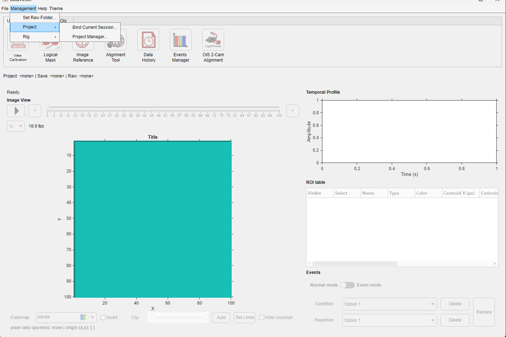
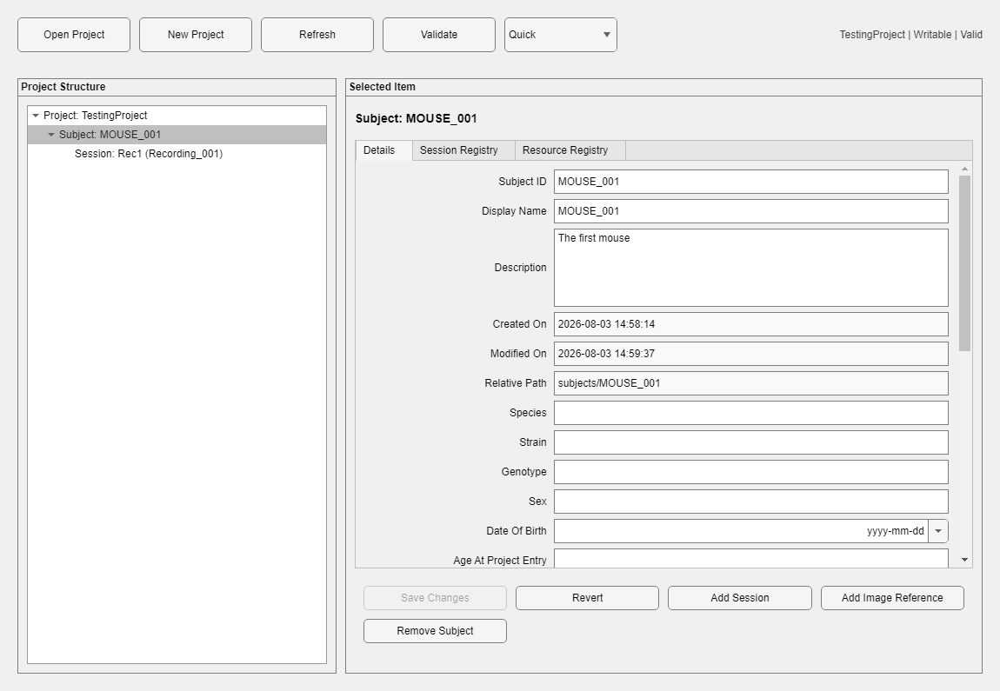
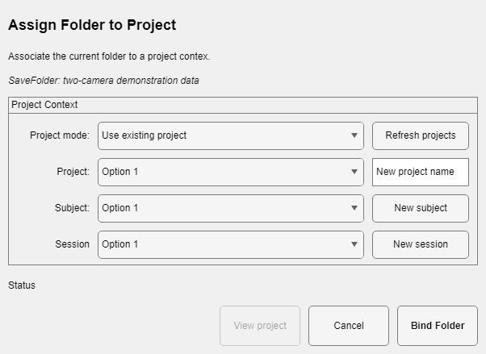
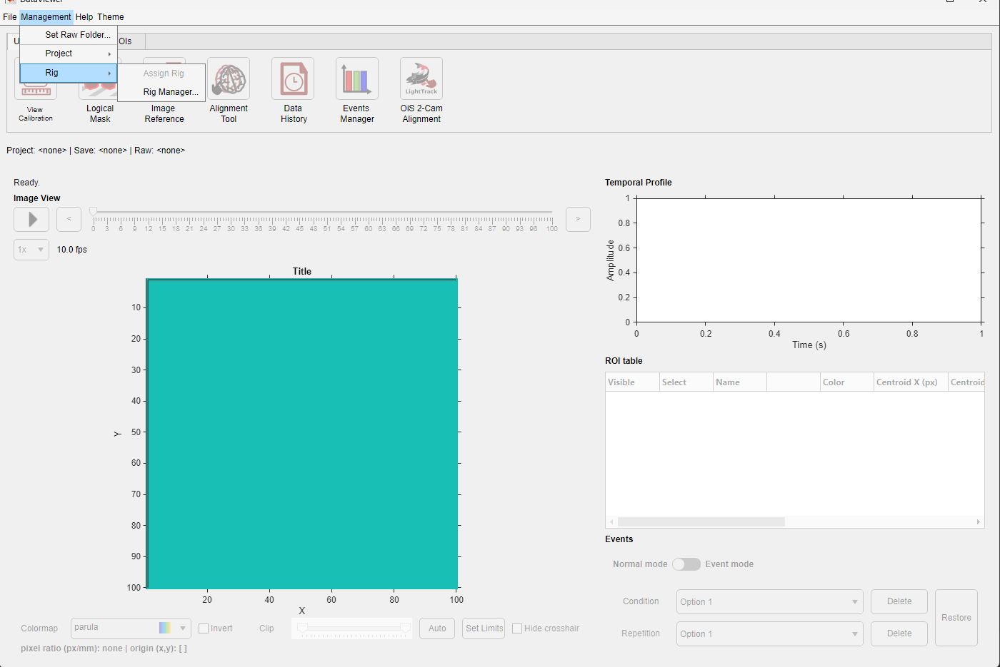

Project Manager organizes project information and managed resources. Project Binding Manager associates one external Save Folder with one project subject and recording session. They are documented together because both establish the context required by Image Reference Manager and Image Alignment Tool.
Use Management > Project > Bind Current Session to open Project Binding Manager for the loaded Save Folder. It keeps project, subject, and session selection inside the binding workflow. Use Management > Project > Project Manager for full project administration. Project Binding Manager also opens automatically when an unbound folder requests a project-dependent tool, and supports deliberate reassignment and link repair.


| Control/action | Purpose |
|---|---|
| Open Project / New Project / Refresh | Selects, creates, or reloads centralized project information. |
| Validate | Checks the project structure and reports whether changes are allowed. |
| Project tree | Selects project, subject, session, rig, calibration, and managed resource records. |
| Details and registry tabs | Edits allowed descriptive metadata and displays structured registries. |
| Save Changes / Revert | Commits validated edits transactionally or restores the selected record. |
| Add Subject / Add Session | Creates hierarchy records. Adding a session selects its processed Save Folder and optional rig. |
| Rebind / Relocate / Repair Binding | Changes an intended folder locator or repairs inconsistent link state after review. |
| Bind Raw Folder / Change Raw Folder | Updates the session's raw-data locator. |
| Add Image Reference | Imports a subject-managed image reference. |
| Set Active Resource / Archive Resource / Restore Resource | These context-sensitive actions appear only when a managed resource is selected in the tree or registry. Set Active makes the selection the subject/session/rig default; Archive removes it from normal use without deleting its history; Restore returns an archived resource to use. |
| Remove Session from Project / Remove Subject / Delete Project | Destructive administrative actions with explicit confirmation and dependency checks. |

Removing a folder from a project is always an explicit action. If the link points to a project that is temporarily unavailable, retry after reconnecting the drive or choose a deliberate reassignment. If the link file is damaged or the project and folder disagree, inspect the intended project, subject, session, and Save Folder before choosing Repair Binding. The managers will not silently replace a conflicting link.
When either manager closes, DataViewer reads the link again and updates the displayed project/Save Folder context and the tools that are available.
For routine session assignment, open Management > Rig > Assign Rig. It lists only readable Active or Available rigs, marks the currently assigned rig, and asks for confirmation before replacing it. Archived rigs are never offered for a new assignment. Use Management > Rig > Rig Manager to create, edit, archive, restore, or otherwise administer rigs.

Use the managers when a project or folder moves
Do not create duplicate project records or hand-edit UMITProjectBinding.umitlink. Use Relocate, Rebind, or Repair Binding so the existing subject and session identity is preserved.